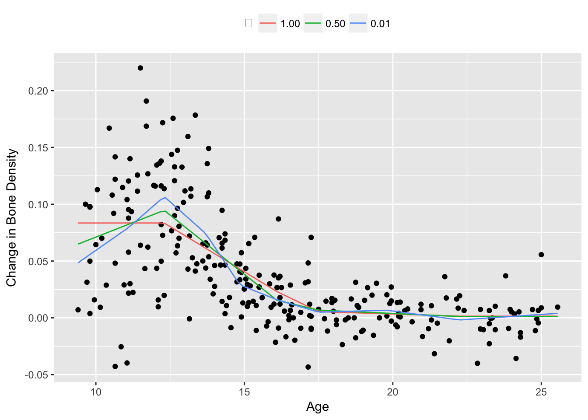
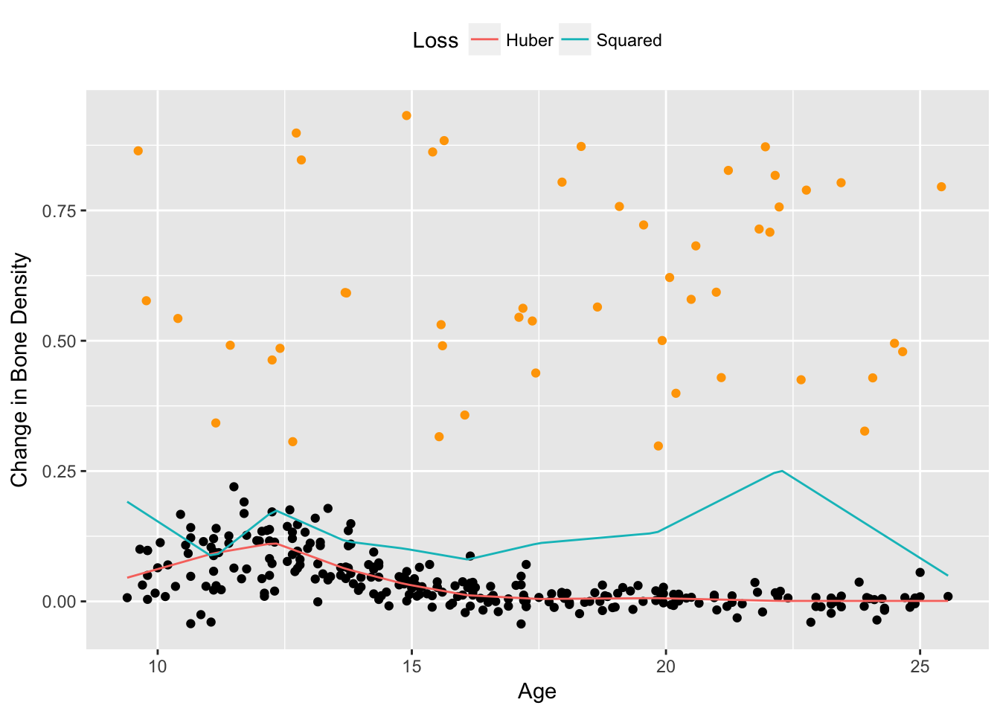

Saturating Hinges Fit
Introduction
The following example comes from work on saturating splines in N. Boyd et al. (2016). Adaptive regression splines are commonly used in statistical modeling, but the instability they exhibit beyond their boundary knots makes extrapolation dangerous. One way to correct this issue for linear splines is to require they saturate: remain constant outside their boundary. This problem can be solved using a heuristic that is an extension of lasso regression, producing a weighted sum of hinge functions, which we call a saturating hinge.
For simplicity, consider the univariate case with \(n = 1\). Assume we are given knots \(t_1 < t_2 < \cdots < t_k\) where each \(t_j \in {\mathbf R}\). Let \(h_j\) be a hinge function at knot \(t_j\), , \(h_j(x) = \max(x-t_j,0)\), and define \(f(x) = w_0 + \sum_{j=1}^k w_jh_j(x)\). We want to solve
\[\begin{array}{ll} \underset{w_0,w}{\mbox{minimize}} & \sum_{i=1}^m \ell(y_i, f(x_i)) + \lambda\|w\|_1 \\ \mbox{subject to} & \sum_{j=1}^k w_j = 0 \end{array}\]for variables \((w_0,w) \in {\mathbf R} \times {\mathbf R}^k\). The function \(\ell:{\mathbf R} \times {\mathbf R} \rightarrow {\mathbf R}\) is the loss associated with every observation, and \(\lambda \geq 0\) is the penalty weight. In choosing our knots, we set \(t_1 = \min(x_i)\) and \(t_k = \max(x_i)\) so that by construction, the estimate \(\hat f\) will be constant outside \([t_1,t_k]\).
Example
We demonstrate this technique on the bone density data for female patients from Hastie, Tibshirani, and Friedman (2001), section 5.4. There are a total of \(m = 259\) observations. Our response \(y_i\) is the change in spinal bone density between two visits, and our predictor \(x_i\) is the patient’s age. We select \(k = 10\) knots about evenly spaced across the range of \(X\) and fit a saturating hinge with squared error loss \(\ell(y_i, f(x_i)) = (y_i - f(x_i))^2\).
suppressMessages(suppressWarnings(library(CVXR)))
## Import and sort data
data(bone, package = "ElemStatLearn")
X <- bone[bone$gender == "female",]$age
y <- bone[bone$gender == "female",]$spnbmd
ord <- order(X, decreasing = FALSE)
X <- X[ord]
y <- y[ord]
## Choose knots evenly distributed along domain
k <- 10
lambdas <- c(1, 0.5, 0.01)
idx <- floor(seq(1, length(X), length.out = k))
knots <- X[idx]In R, we first define the estimation and loss functions:
## Saturating hinge
f_est <- function(x, knots, w0, w) {
hinges <- sapply(knots, function(t) { pmax(x - t, 0) })
w0 + hinges %*% w
}
## Loss function
loss_obs <- function(y, f) { (y - f)^2 }This allows us to easily test different losses and knot locations later. The rest of the set-up is similar to previous examples. We assume that knots is an R vector representing \((t_1,\ldots,t_k)\).
## Form problem
w0 <- Variable(1)
w <- Variable(k)
loss <- sum(loss_obs(y, f_est(X, knots, w0, w)))
constr <- list(sum(w) == 0)
xrange <- seq(min(X), max(X), length.out = 100)
splines <- matrix(0, nrow = length(xrange), ncol = length(lambdas))The optimal weights are retrieved using separate calls, as shown below.
for (i in seq_along(lambdas)) {
lambda <- lambdas[i]
reg <- lambda * p_norm(w, 1)
obj <- loss + reg
prob <- Problem(Minimize(obj), constr)
## Solve problem and save spline weights
result <- solve(prob)
w0s <- result$getValue(w0)
ws <- result$getValue(w)
splines[, i] <- f_est(xrange, knots, w0s, ws)
}Results
We plot the fitted saturating hinges in Figure 1 below. As expected, when \(\lambda\) increases, the spline exhibits less variation and grows flatter outside its boundaries.
d <- data.frame(xrange, splines)
names(d) <- c("x", paste0("lambda_", seq_len(length(lambdas))))
plot.data <- gather(d, key = "lambda", value = "spline",
"lambda_1", "lambda_2", "lambda_3", factor_key = TRUE)
ggplot() +
geom_point(mapping = aes(x = X, y = y)) +
geom_line(data = plot.data, mapping = aes(x = x, y = spline, color = lambda)) +
scale_color_discrete(name = expression(lambda),
labels = sprintf("%0.2f", lambdas)) +
labs(x = "Age", y = "Change in Bone Density") +
theme(legend.position = "top")
The squared error loss works well in this case, but the Huber loss is preferred when the dataset contains large outliers. To see this, we add 50 randomly generated outliers to the bone density data and re-estimate the saturating hinges.
## Add outliers to data
set.seed(1)
nout <- 50
X_out <- runif(nout, min(X), max(X))
y_out <- runif(nout, min(y), 3*max(y)) + 0.3
X_all <- c(X, X_out)
y_all <- c(y, y_out)
## Solve with squared error loss
loss_obs <- function(y, f) { (y - f)^2 }
loss <- sum(loss_obs(y_all, f_est(X_all, knots, w0, w)))
prob <- Problem(Minimize(loss + reg), constr)
result <- solve(prob)
spline_sq <- f_est(xrange, knots, result$getValue(w0), result$getValue(w))
## Solve with Huber loss
loss_obs <- function(y, f, M) { huber(y - f, M) }
loss <- sum(loss_obs(y, f_est(X, knots, w0, w), 0.01))
prob <- Problem(Minimize(loss + reg), constr)
result <- solve(prob)
spline_hub <- f_est(xrange, knots, result$getValue(w0), result$getValue(w))Figure 2 shows the results. For a Huber loss with \(M = 0.01\), the resulting spline is fairly smooth and follows the shape of the original data, as opposed to the spline using squared error loss, which is biased upwards by a significant amount.
d <- data.frame(xrange, spline_hub, spline_sq)
names(d) <- c("x", "Huber", "Squared")
plot.data <- gather(d, key = "loss", value = "spline",
"Huber", "Squared", factor_key = TRUE)
ggplot() +
geom_point(mapping = aes(x = X, y = y)) +
geom_point(mapping = aes(x = X_out, y = y_out), color = "orange") +
geom_line(data = plot.data, mapping = aes(x = x, y = spline, color = loss)) +
scale_color_discrete(name = "Loss",
labels = c("Huber", "Squared")) +
labs(x = "Age", y = "Change in Bone Density") +
theme(legend.position = "top")
Session Info
sessionInfo()## R version 3.4.2 (2017-09-28)
## Platform: x86_64-apple-darwin15.6.0 (64-bit)
## Running under: macOS High Sierra 10.13.1
##
## Matrix products: default
## BLAS: /Library/Frameworks/R.framework/Versions/3.4/Resources/lib/libRblas.0.dylib
## LAPACK: /Library/Frameworks/R.framework/Versions/3.4/Resources/lib/libRlapack.dylib
##
## locale:
## [1] en_US.UTF-8/en_US.UTF-8/en_US.UTF-8/C/en_US.UTF-8/en_US.UTF-8
##
## attached base packages:
## [1] methods stats graphics grDevices datasets utils base
##
## other attached packages:
## [1] CVXR_0.94-2 ggplot2_2.2.1 tidyr_0.7.2
##
## loaded via a namespace (and not attached):
## [1] gmp_0.5-13.1 Rcpp_0.12.13 bindr_0.1
## [4] compiler_3.4.2 plyr_1.8.4 R.methodsS3_1.7.1
## [7] R.utils_2.6.0 tools_3.4.2 digest_0.6.12
## [10] bit_1.1-12 evaluate_0.10.1 tibble_1.3.4
## [13] gtable_0.2.0 lattice_0.20-35 pkgconfig_2.0.1
## [16] rlang_0.1.2 Matrix_1.2-11 yaml_2.1.14
## [19] blogdown_0.1.7 bindrcpp_0.2 dplyr_0.7.4
## [22] Rmpfr_0.6-1 ECOSolveR_0.3-2 stringr_1.2.0
## [25] knitr_1.17 tidyselect_0.2.2 rprojroot_1.2
## [28] bit64_0.9-7 grid_3.4.2 glue_1.2.0
## [31] R6_2.2.2 rmarkdown_1.6 bookdown_0.5
## [34] purrr_0.2.4 magrittr_1.5 backports_1.1.1
## [37] scales_0.5.0 htmltools_0.3.6 scs_1.1-1
## [40] assertthat_0.2.0 colorspace_1.3-2 labeling_0.3
## [43] stringi_1.1.5 lazyeval_0.2.1 munsell_0.4.3
## [46] R.oo_1.21.0Source
References
Boyd, N., T. Hastie, S. Boyd, B. Recht, and M. Jordan. 2016. “Saturating Splines and Feature Selection.” arXiv Preprint arXiv:1609.06764.
Hastie, T., R. Tibshirani, and J. Friedman. 2001. The Elements of Statistical Learning. Springer.